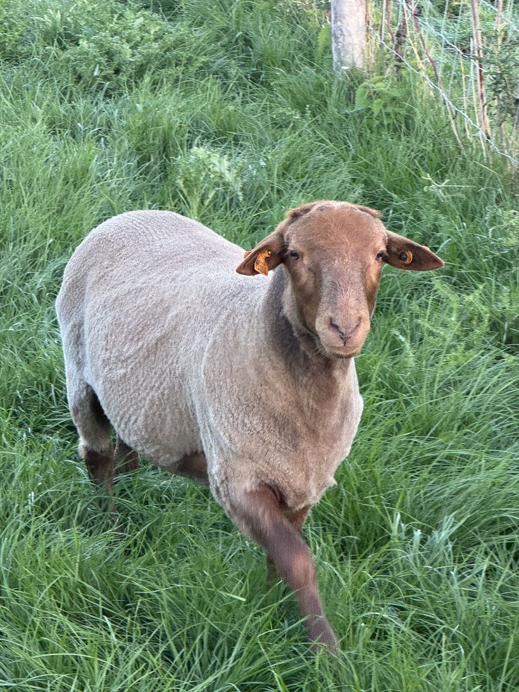
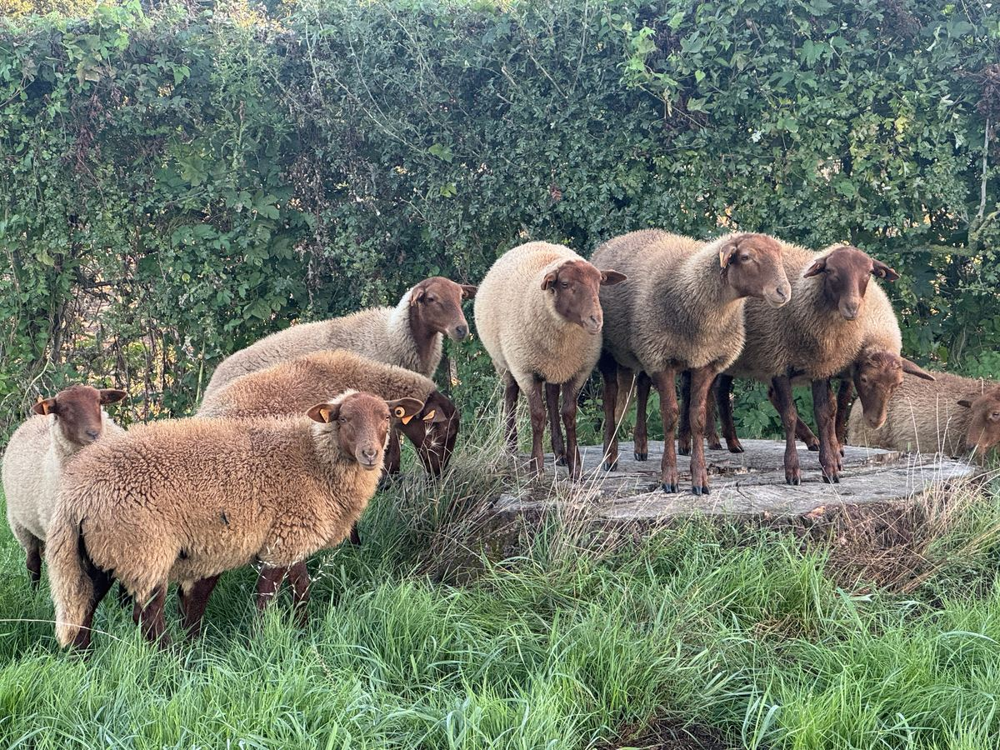
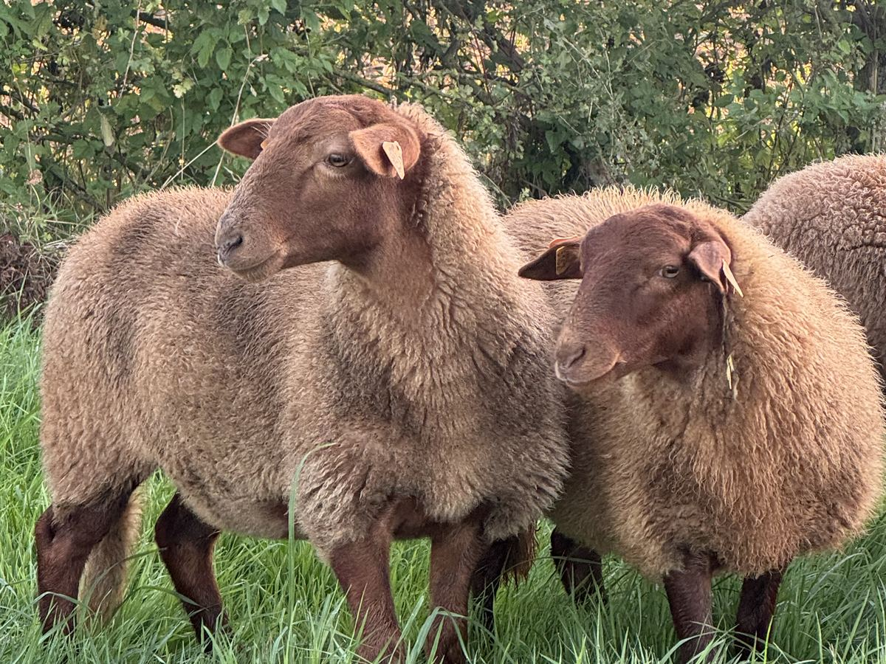
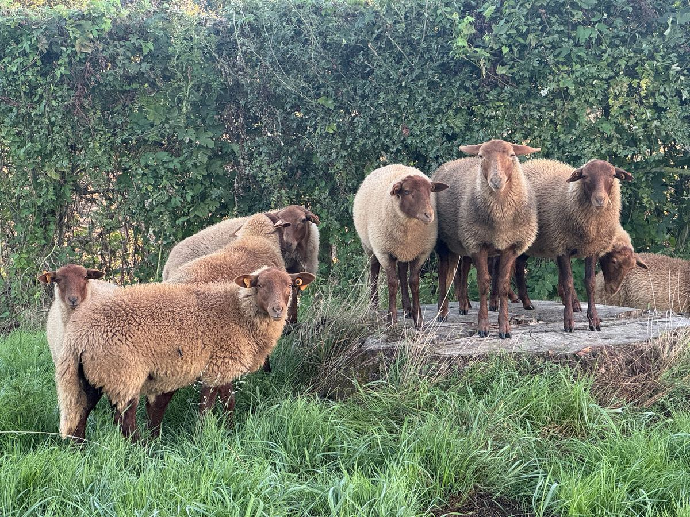

Winterhard
Gewend aan strenge winters en schraal voeder staat ze een groot deel van het jaar buiten en benut ze grasland dat andere rassen links laten liggen.
Wij fokken de Ardense voskop raszuiver, ingeschreven in het stamboek van de AWE. Een kudde die met methode is opgebouwd, gedocumenteerde bloedlijnen, en fokdieren die verkocht worden mét het genetische advies dat erbij hoort.
De Ardense voskop is een van de oudste schapenrassen van België. Het scheelde niet veel of het was verdwenen: eind de jaren 1950 was het weggevaagd uit de Ardennen, zijn streek van oorsprong. Het heeft alleen in Vlaanderen overleefd, dankzij Vlaamse en Limburgse schapenhandelaars en fokkers die het onder de naam Ardense voskop in leven hielden. Pas daarna is het opnieuw in Wallonië ingevoerd.
Vandaag is het erkend als een met uitsterven bedreigd lokaal ras. Het grootste deel van de dieren zit nog altijd in de provincies Luik, Namen en Luxemburg. In Henegouwen is het ras zeldzaam. Precies daarom hebben wij La Bergerie de la Sille opgericht: om het ras bereikbaar te maken in het westen van het land, zonder dat u naar de Ardennen moet rijden.
Wij zijn twee broers. Wij hebben een kudde raszuivere Ardense voskoppen gekocht, allemaal ingeschreven bij de AWE, en wij houden ze met één obsessie: gezonde bloedlijnen bewaren en andere fokkers laten starten zonder dat ze in de inteelt vastlopen.
Onze fokkerij
Dit is geen wedstrijdras uit de vitrine. Dit is een ras van het veld, eeuwenlang geselecteerd door de harde omstandigheden van de Ardennen.
Gewend aan strenge winters en schraal voeder staat ze een groot deel van het jaar buiten en benut ze grasland dat andere rassen links laten liggen.
Doorgaans vlot aflammeren en een uitgesproken moederinstinct : twee eigenschappen die alles veranderen als u begint en niet dag en nacht in de stal kan staan.
Dat is haar grootste troef, door Elevéo op het maximum gequoteerd. Ze graast gras, maar lust evengoed brandnetels, bramen en blad : ideaal om schrale, natte of verruigde percelen te benutten.
Ardense voskoppen houden is concreet meewerken aan het behoud van een met uitsterven bedreigd lokaal ras. In Wallonië kan die houderij recht geven op een jaarlijkse premie.
Het stamboek van de AWE omkadert het ras : identificatie, afstamming, voorlopige keuring van de lammeren. U weet wat u koopt, en waar het vandaan komt.
Ondanks een bewust lichte bevleesdheid leveren de lammeren mager vlees van uitstekende kwaliteit, al eeuwenlang geroemd. Een ras met dubbel doel.
Laten we ook zeggen wat er niet aan deugt. De Ardense voskop is geen knuffelschaap : de officiële rasstandaard omschrijft hem als « fijn, levendig, wantrouwig, die men met regelmatige bezoeken moet vertrouwd maken ». En hij lust jonge schors : in een boomgaard of een aanplant moeten de stammen beschermd worden. Dat weet u beter vóór de aankoop dan erna.
Drie ooien en een dekram bij dezelfde fokker kopen : dat is de meest voorkomende manier om uw kudde op drie generaties tijd om zeep te helpen. Inteelt, kwakkelende lammeren, vruchtbaarheid die instort. Het probleem is bijna nooit het dier : het is de samenstelling bij de start.
Wij doen dus het omgekeerde van verkopen en klaar. Wij bekijken samen met u wat u al heeft, waar u naartoe wil, en wij stellen een samenhangend lot samen — desnoods verwijzen wij u voor de ram door naar een andere fokker. Dat hoort bij ons vak.
Onze gids om een kudde samen te stellenElk dier vertrekt met zijn identificatie, zijn afstamming en zijn AWE-documenten. Geen dieren « zonder papieren » die als raszuiver verkocht worden.
U vertrekt met de wetenschap welke paringen u moet vermijden en wanneer u uw dekram vervangt. Op papier, niet even gezegd achteraan de aanhangwagen.
Een dekram mag niet langer dan twee seizoenen bij dezelfde dochters blijven. Wij organiseren die rotatie met onze kopers in plaats van u alleen te laten.
Onze dieren staan niet in de etalage. Wij houden het hele jaar door kuddes in echte omstandigheden. Wat wij u vertellen, doen wij zelf.
Dieren ingeschreven in het stamboek, geïdentificeerd en gedocumenteerd. De beschikbaarheid wisselt mee met het aflammeren : neem contact op voor de stand van zaken.
Deze prijzen gelden per dier en zijn degressief vanaf meerdere stuks. Wij geven de prijs altijd vóór het bezoek — nooit verrassingen ter plaatse.

Naast de fokkerij baten wij O'Sheep uit, een bedrijf voor natuurbegrazing. Onze kuddes onderhouden het hele jaar door terreinen, zowel bij bedrijven als bij particulieren.
Dat verandert twee dingen voor u. Ten eerste is de Ardense voskop van nature wantrouwig — de rasstandaard zegt het zelf. Onze dieren worden het hele jaar door gehanteerd : mobiele omheining, verplaatsingen, regelmatig contact. Ze komen bij u aan al gewend aan de mens, en dat geldt niet voor alle dieren van dit ras. Ten tweede : als u ons vraagt of het ras bij uw terrein past, antwoorden wij niet met een brochure, maar met jaren echte begrazing achter ons.
Beide activiteiten blijven juridisch en commercieel gescheiden. O'Sheep verhuurt een onderhoudsdienst ; La Bergerie de la Sille verkoopt raszuivere fokdieren.
Ontdek O'SheepVanuit Silly zitten wij vlakbij Brussel, Bergen, Aat, Edingen, Doornik, Zinnik, Nijvel, Ninove en Geraardsbergen — net daar waar het ras tot nu toe niet te vinden was.
Een bezoek plannen

Of u nu twee ooien wil om een boomgaard te onderhouden of een echte fokkern wil opbouwen : schrijf ons. Wij antwoorden iedereen, en wij zeggen u liever eerlijk dat het niet het juiste moment of niet het juiste ras voor u is.
Bezoeken gebeuren op afspraak, in Silly. De dieren ter plaatse komen bekijken blijft altijd de beste manier om te beslissen.
La Bergerie de la Sille
7830 Silly — provincie Henegouwen, België
info@labergeriedelasille.be